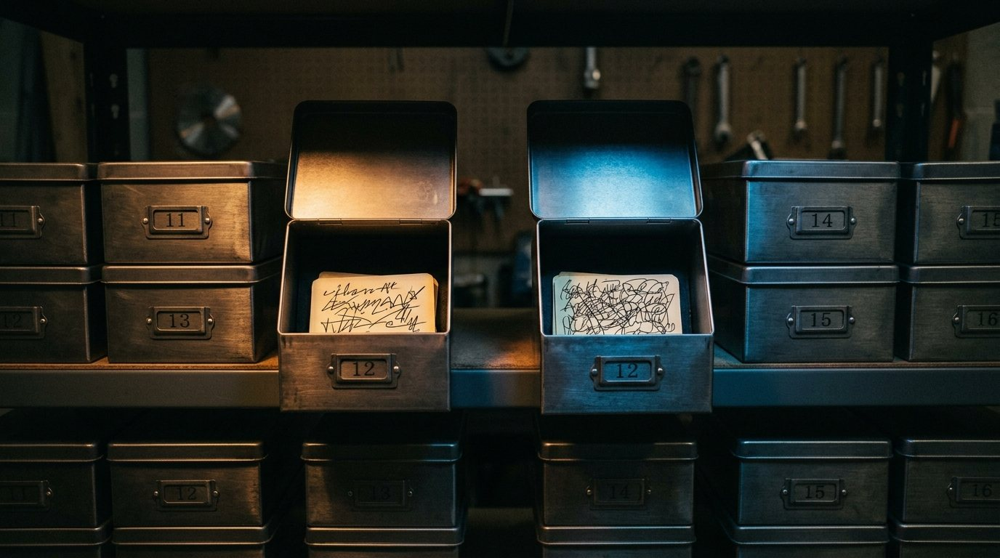
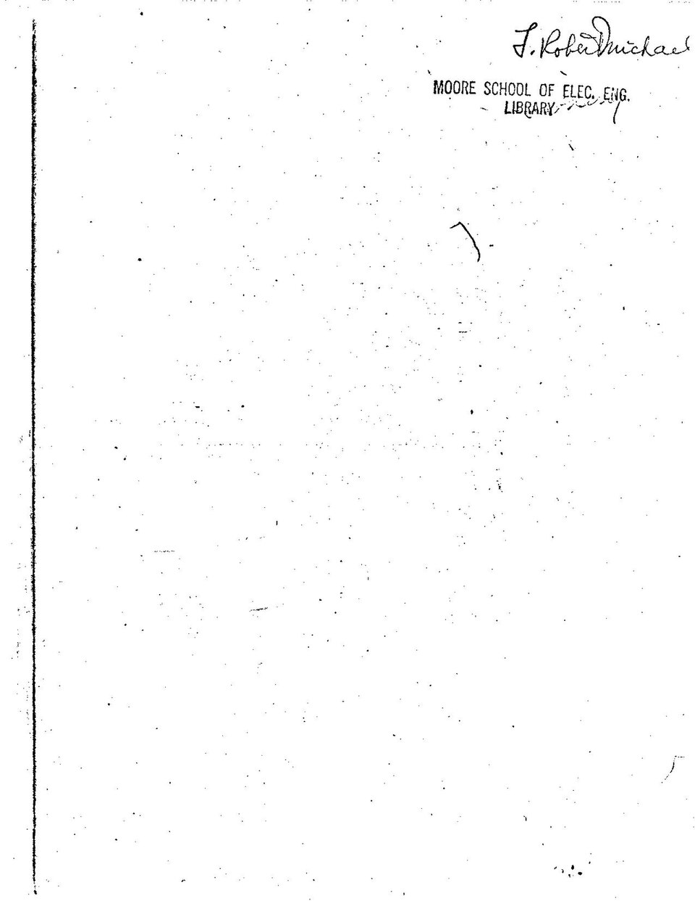
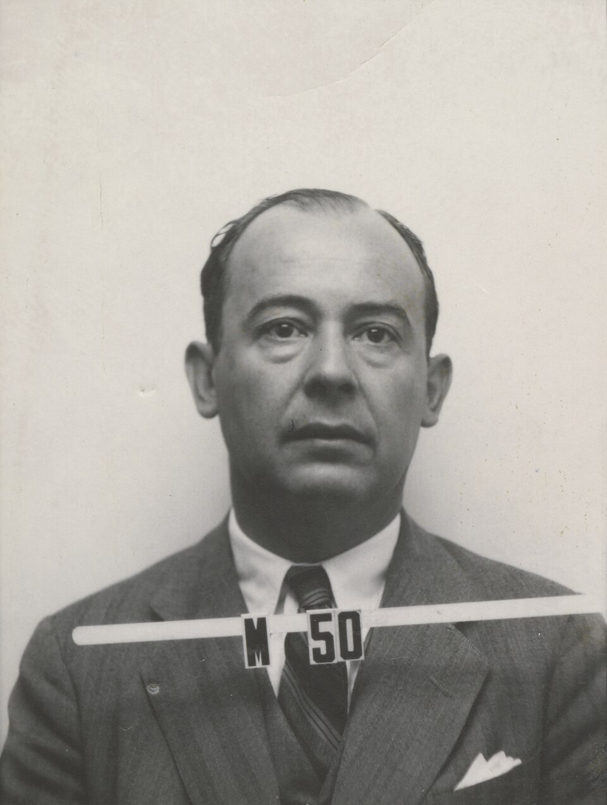
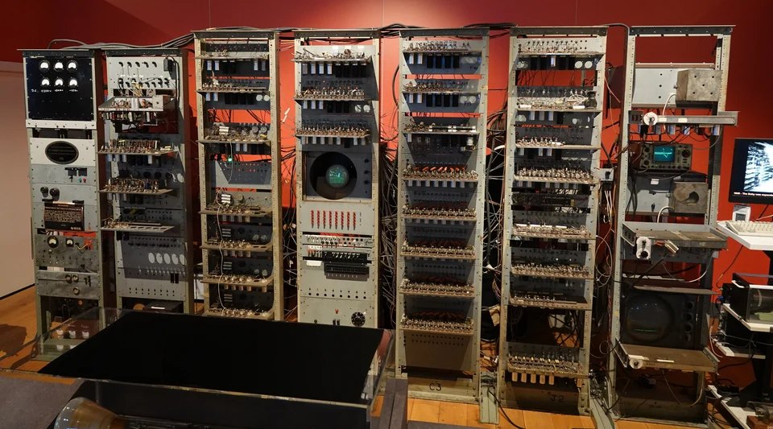
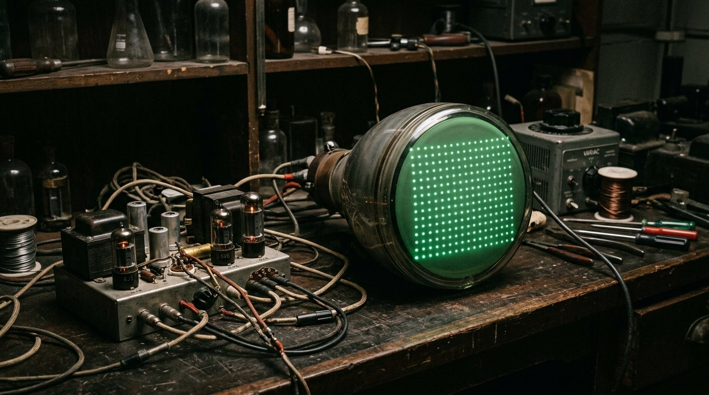
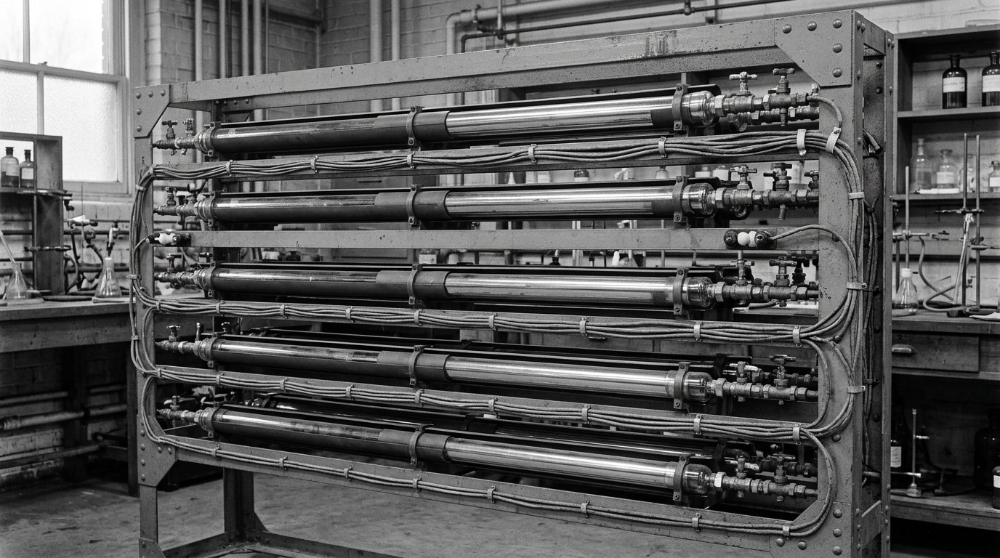

O programa que mora na memória
De 1945 a 1949. Uma peça só, mas é a peça que separa uma calculadora automática de um computador. Quando o áudio pedir, aperte Próximo.
Onde a gente parou. Z3, Mark I e ENIAC já calculavam sozinhos, mas o programa morava fora: na fita, no cabo, na chave. Trocar de tarefa era trabalho braçal de dias.

A mesma caixa serve pras duas coisas

Não precisou inventar material novo. A memória já era uma fileira de posições numeradas guardando zeros e uns, e ordem e número cabem no mesmo formato.
Dias viram segundos
Trocar de tarefa deixa de ser arrancar cabo e vira carregar outro conteúdo na memória. Toda a velocidade que os circuitos ganhavam sumia na preparação: agora não some mais.
O rascunho

O nome que ficou
A ideia era do grupo, o nome que ficou foi de um só. Isso vai acontecer de novo mais de uma vez nesta série.

Salto condicional
Se a ordem é um número na memória, a máquina pode fazer conta com a própria ordem, e calcular pra onde ir. É daí que sai o "se der isso, vá pra lá".
Laço
Se ela calcula o endereço da próxima ordem, ela pode voltar num pedaço que já executou. Repetir a mesma coisa mudando um número: é o laço.
Sub-rotina
Um trecho que serve pra várias tarefas pode ser guardado e chamado de novo, em vez de reescrito. Salto, laço e rotina pronta, juntos, são o que separa uma calculadora automática de um computador.
O Baby


O EDSAC
O Baby provou que dá. O EDSAC transformou aquilo em serviço de todo dia.


1949
A forma do computador moderno está de pé. Falta a pergunta que abre o próximo passo: por que a própria máquina não traduz, se traduzir também é uma tarefa?